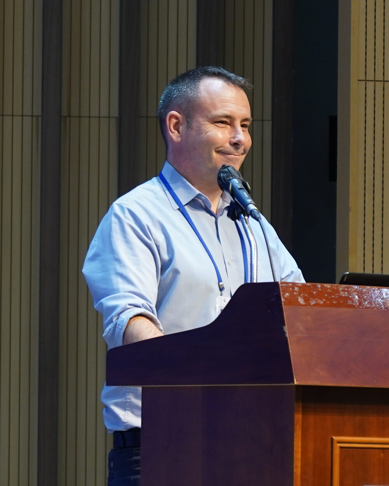

y = β₀ + β₁x + ε
Handbook of Regression Modeling in People Analytics
R과 Python 예제 포함
설명적·추론적 모델링을 위한 실용 가이드: 선형, 로지스틱, 순서형, 다항, 계층, 생존 모형을 모두 실제 인사 데이터에 기반해 다룹니다.
수학자 · 산업조직심리학자 · 데이터 과학자 · 교육자 · 저자
저는 수학과 사람이 만나는 곳에서, 양방향으로 일합니다. 수학을 통해 사람과 조직을 더 잘 이해하고, 모든 세대의 사람들이 수학을 더 잘 이해하도록 돕습니다.

저는 수학자이자 산업조직심리학자, 데이터 과학자, 그리고 교육자입니다. 순수수학 박사 학위를 가지고 있으며, 제가 하는 모든 일은 하나의 생각으로 돌아갑니다. 엄밀한 사고를 명확하게 설명하면 사람들이 세상을 보는 방식이 바뀐다는 것입니다.
직업적으로는 탤런트 사이언스와 피플 애널리틱스 업무를 이끌며, 산업조직심리학과 데이터 과학을 결합해 조직이 통계, 네트워크 과학, 머신러닝을 활용하여 사람에 관해 더 낫고 더 공정한 결정을 내리도록 돕습니다. 피플 애널리틱스 모델링에 관한 기술서 두 권을 썼고, 일의 미래, 애널리틱스, AI에 대해 세계 각지에서 강연합니다.
이 모든 것을 관통하는 실은 수학입니다. 정리, 문제, 증명, 코드로 가득한 수학 블로그를 쓰고 있고, 최근 연구 분야는 대수적 조합론입니다. 교육자로서는 고등학교 수학과 대학 수학 사이의 간극에 집중하며, 학생들이 '답을 구하는 것'에서 '왜 그것이 참인지 이해하는 것'으로 나아가도록 돕습니다.
수학 블로그 · Medium
호기심 많은 이들을 위한 수학: 아름다운 결과를 한 단계씩 풀어 보고, 곱씹어 볼 만한 문제를 다루며, 코드로 아이디어에 생명을 불어넣습니다.
간극에 주목하세요.
고등학교 수학은 계산하는 법을 가르칩니다. 대학 수학은 증명하고, 탐구하고, 사고하기를 요구합니다. 교육자로서 저는 그 간극에 집중하여, 뛰어난 학생들이 '답을 구하는 것'에서 '왜 그것이 참인지 이해하는 것'으로 도약하도록 돕습니다.
설명적·추론적 모델링을 위한 실용 가이드: 선형, 로지스틱, 순서형, 다항, 계층, 생존 모형을 모두 실제 인사 데이터에 기반해 다룹니다.
조직을 네트워크로 모델링하는 방법: 그래프 이론, 중심성, 커뮤니티 탐지, 시각화를 사람들이 실제로 연결되고 협업하는 방식에 적용합니다.
최근 연구 분야는 대수적 조합론이며, 현재는 이머넌트(immanant)의 Kazhdan–Lusztig 양성을 연구하고 있습니다. 대칭군의 지표로 만들어지는 특정 행렬 함수가 언제 음이 아님이 보장되는지, 그리고 그 이유는 무엇인지에 관한 연구입니다.

연락 / 협업
강연, 연구 협업, 교육, 혹은 좋은 수학 문제 하나라도: 언제든 연락 주세요.
연락하기 ✉다른 곳에서도 만나보세요